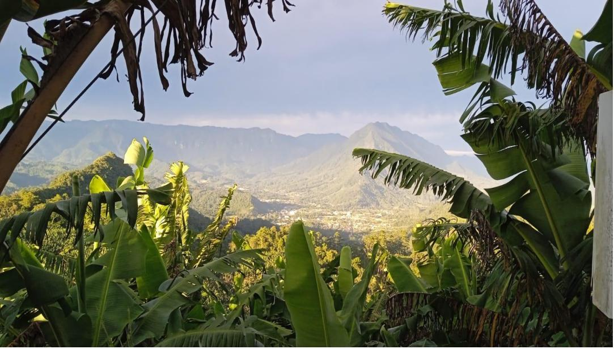

Visitas: 1
PP5TKR é uma estação repetidora de radioamador localizada em Corupá, Santa Catarina, Brasil. Fruto do trabalho dos colegas PP5TK e PU5GEK com apoio de toda comunidade de radioamadores locais.
A repetidora recebe sinais de rádio na frequência de 29.680mhz e retransmite em 29.580mhz para ampliar alcance. Isso facilita contatos locais e dx quando os sinais diretos não são suficientes para transpor barreiras.
Prefixo: PP5TKR
Local: Corupá — Santa Catarina, Brasil
Frequência: 29.680-tx 29.580-rx
Potência: 25W pep.
Registre o indicativo e localização ou uma observação curta. Cada registro aparecerá abaixo e fica salvo no seu navegador.
Nenhum registro.
1) Sintonize a frequência de entrada .
Mantenha transmissões curtas e claras.
Evite ruído e interferência.
De prioridade a estações dx.
Esta página permite registrar os logs localmente no navegador. Significa que o (log) é mantido somente no dispositivo onde a página é aberta, podendo ser salvo no dispositivo.
© 2026 PP5TKR — Corupá (SC)